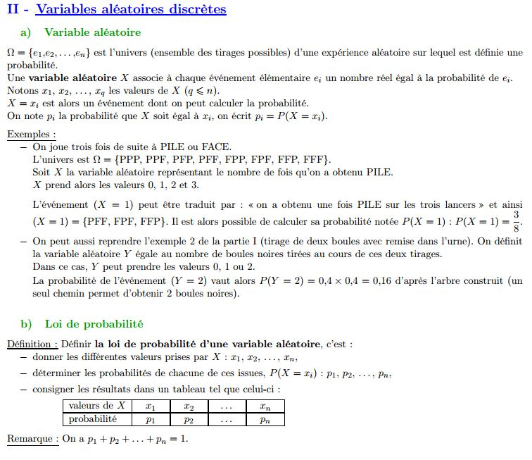

Chapitre VI - Variables aléatoires
Voici le fichier contenant le cours (il contient toutes les captures d'écran). Vous trouverez ci-dessous les exemples à intégrer.
Début du chapitre (capture présente dans le fichier) :

Voici deux exemples de construction d'un arbre, au format pdf et en vidéo : exemple 1 et exemple 2
Faire l'exercice 56 p. 160 le vendredi 03 avril.
Pour le mardi 07 avril, faire l'exercice 95 p. 167.
Voici la correction de ces exercices.
Variable aléatoire discrète
Suite du chapitre (capture présente dans le fichier) :

Voici deux exemples de construction d'une loi de probabilité, au format pdf et en vidéo : exemple 1 et exemple 2
mardi 07 avril : faire l'exercice 40 p. 158 (correction dont le lien est mis en bas de page)
Voici le dernier point de cette partie : l'espérance d'une variable aléatoire (capture présente dans le fichier).
Cela représente la moyenne des valeurs de la variable aléatoire X.
Voici deux exemples sur le calcul de l'espérance d'une variable alétaoire (à recopier) et les explications en vidéo :
Mardi 07 avril : Faire l'exercice 26 p. 157 (la correction est à la fin du manuel, mais vous le savez mieux que moi...).
Faire également l'exercice 27 p. 157.
Voici la correction des exercices 40 p. 158 et 26 p. 157.
Repétition d'épreuves de Bernoulli
Suite du chapitre (capture présente dans le fichier) :

La suite du chapitre sera traitée à l'aide de deux exemples :

Voici les exemples du cours (à recopier) : partie 1 et partie 2
Exemple 1 en vidéo : Exemple 2 en vidéo :